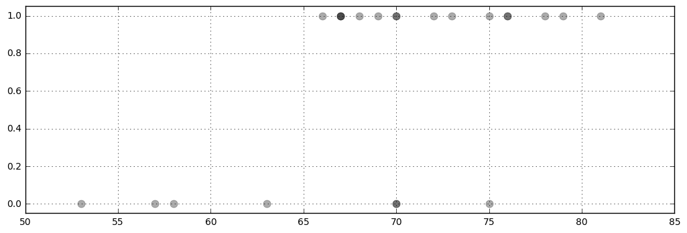
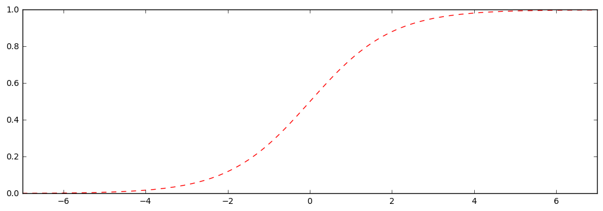
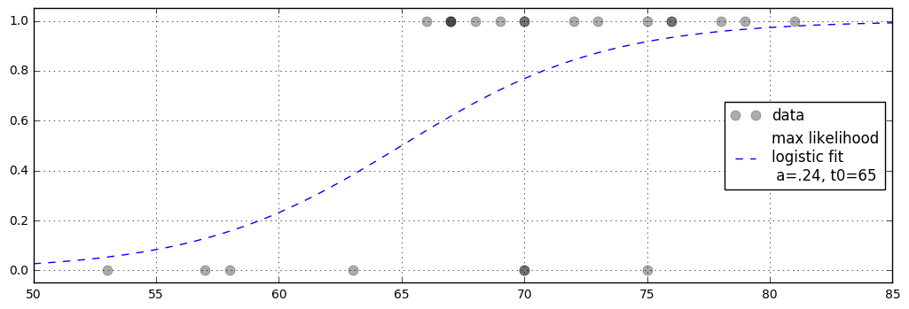

Logistic Regression
May 4, 2016This time we are going to look at logistic regression. The data were obtained by the
Space Shuttle Challenger disaster O-ring data failure data (from 1986):
Failures at temperatures: [70, 57, 63, 70, 53, 75, 58]
Successes at temperatures: [66, 69, 68, 67, 72, 73, 70, 78, 67, 67, 75, 70, 81, 76, 79, 76]
Apparently they were aware of failures and successes at various temperatures, but were not considering the temperature dependence of these numbers when making the decision to launch at $31^\circ$ F.
Importing libraries
|
|
Creating lists to work with the data
|
|
Plotting the data
|
|

Looking at the above graph of this data, suggests modeling the data with a logistic function:
Assuming the probability of success at temperature $t$ is given by $p(t) = 1/(1+\exp(-a(t-t_0))$, let’s find the maximum likelihood fit for the values of $a$ and $t_0$.
For these values, what is the probability of failure at the actual launch temperature $t=31^\circ$ F.?
Note that the transparency alpha=.33 makes visible when points are on top of each other (e.g., there are three success data points for t=67, and two failures and two successes for t=70).
Define and plot the logistic function
|
|

Objective
The object is to find parameters a and t0 for the logistic p(t,a,t0) that give the highest overall probability of the data.
For each value of t0 and a, there’s a sigmoid function p(t,a,t0). Mathematically that’s $p(t\ |\ t_0, a)$,
the probability that the O-ring is OK at temperature t, given some value of t0 and a.
The probability of a data point is therefore p(t,a,t0) if the datapoint is a success (1), and 1- p(t, t0, a) if the datapoint is a failure (0).
To calculate the overall probability of the data (for some fixed t0,a), we take a product of the above probabilities over the 23 data points (7 failures, 16 successes), i.e.,(1-p(53 , t0,a)) * (1- p(57 , t0, a)) * ... * p(79 , t0, a) * p(78 , t0, a)
(and if a datapoint occurs more than once, it is included multiple times in the product, according to how it occurred each time).
The optimal values of t0 and a maximize the probability of the data (given the assumption that the probability of failure is given by a sigmoid function in the first place).
Then for those maximum probable values, we will calculate the probability of failure for t=31.
Notes
It’s usually preferable to calculate the log of something small like a product of probabilities to avoid underflow. The log of the above expression is just the sum of the logs of the terms in the product, so the result would benp.sum(np.log(1-p(T0,t0,a))) + np.sum (np.log(p(T1,t0,a))
where T0 is an array of values of t with failed o-ring (0), and T1 is an array of values of t with success (1).
Note that p() of an array will give a list of probabilities for each value in the array, then np.log() will similarly map onto each term on the list, then those values are summed by np.sum().
There are more efficient ways of finding optimal values of parameters, but since there are only two parameters in this case it is possible to perform a brute-force search over the 2-dimensional grid of values of a in np.arange(.01,1.,.01) and t0 in np.arange(50,85.001,.5). That would be 100 values of a from .01 to 1, and 72 values of t0 from 50 to 85.
Finding the max
|
|
-10.161118065421583
Find optimal values of a and t0
|
|
max at a=0.24000000000000002, t0=65.0
Plot the resulting logistic function on the original graph
|
|

Should we launch?
|
|
probability of failure at t=31 = 99.97%